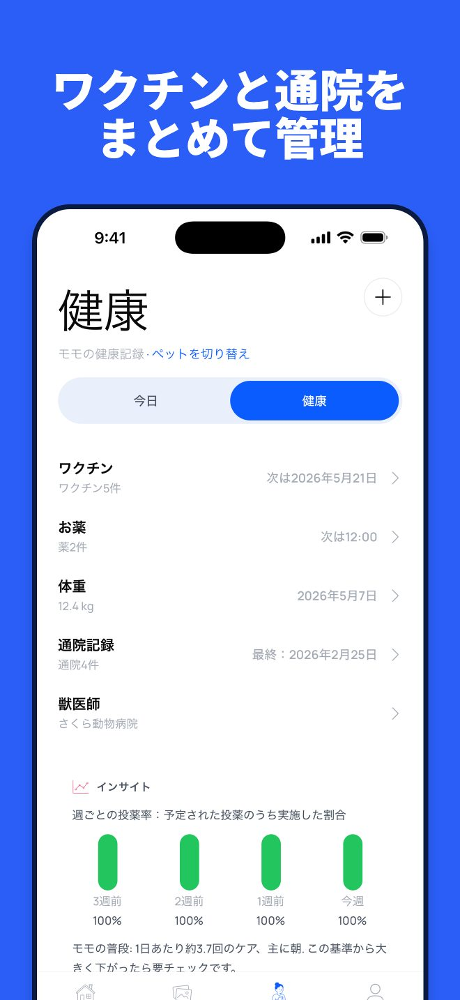
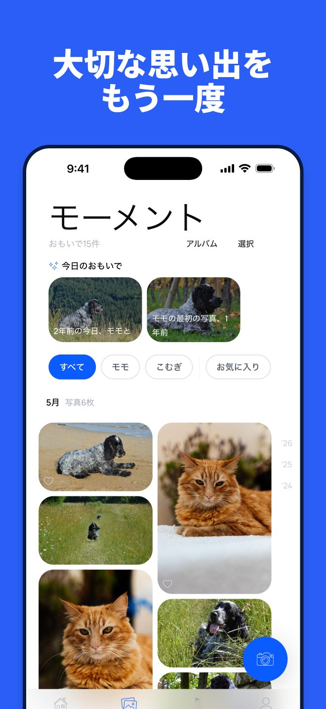
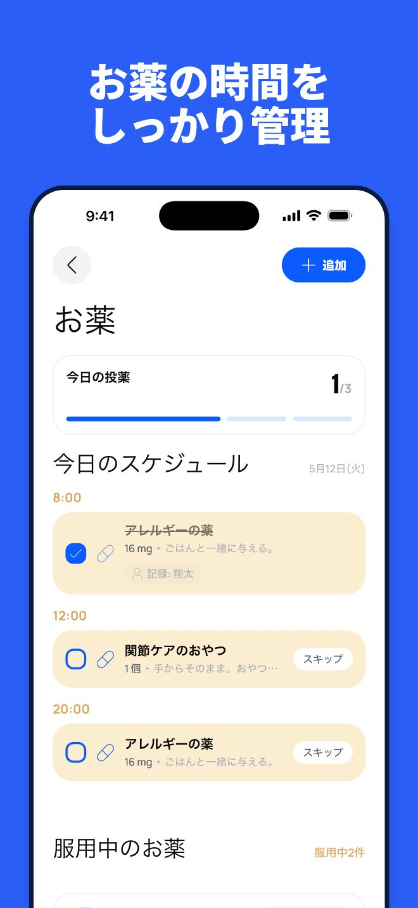

Pet Moments
犬猫の投薬リマインダー・ワクチン・体重記録と日記
愛犬・愛猫のお薬は時間どおりに、ワクチンはきちんと記録。残したい写真もひとつの場所に。




Pet Momentsは、お薬と投薬時間を管理し、ワクチンの時期が近づくとお知らせ。通院や体重もまとめて記録できます。アカウントなしで無料で始められ、必要なときは家族とお世話を分担。獣医さんには整理された記録をすぐに渡せます。
お薬と投薬
- お薬ごとに投薬時間を登録し、毎回リマインダーを受け取れます
- ワンタップで投薬済みにでき、今日の予定がひと目でわかります
- 服薬の継続日数を確認でき、お薬の補充が近づくとお知らせします
- 処方箋の写真を、そのお薬と一緒に保存できます
ワクチン・通院・体重
- ワクチンを記録し、接種済み・もうすぐ・期限切れがわかります
- ワクチンの時期が近づくとお知らせします
- 通院の記録、持病、マイクロチップ番号をメモできます
- 体重の変化をグラフで確認できます
- 獣医さんに渡せる通院パケットをPDFで作成できます
一緒に過ごす毎日の日記
- 写真をメモと一緒に保存し、お気に入りやアルバムで整理できます
- 「あの日の」機能で、過去の同じ日の思い出が届きます
- 思い出をストーリー用カードでシェアできます
- 大切な子が亡くなっても、記録と写真はそのまま残ります
毎日のお世話
- ごはん・お水・散歩・グルーミング・トイレをワンタップで記録
- 今日残っていることを確認し、お世話の連続記録をつくれます
- ペットごとに週間レポートが届きます
家族でお世話を共有
- 家族やペットシッター、散歩代行の方を招待できます
- タスクを割り当てて、誰が何をしたか確認できます
- 編集できる人と閲覧だけの人を選べます
プライバシー
- 広告なし。データを販売することはありません
- アカウントなしで始められ、ログインすると端末間で同期できます
- データはいつでも書き出せます
無料版では、ペット1匹、投薬時間1回のお薬1件、写真5枚まで使えます。毎日のお世話、基本の健康記録、データの書き出しも含まれます。プレミアムでは、ペット・お薬・写真が無制限になり、1つのお薬に複数の投薬時間、共同ケア、処方箋の写真、通院パケット（PDF）が使えます。